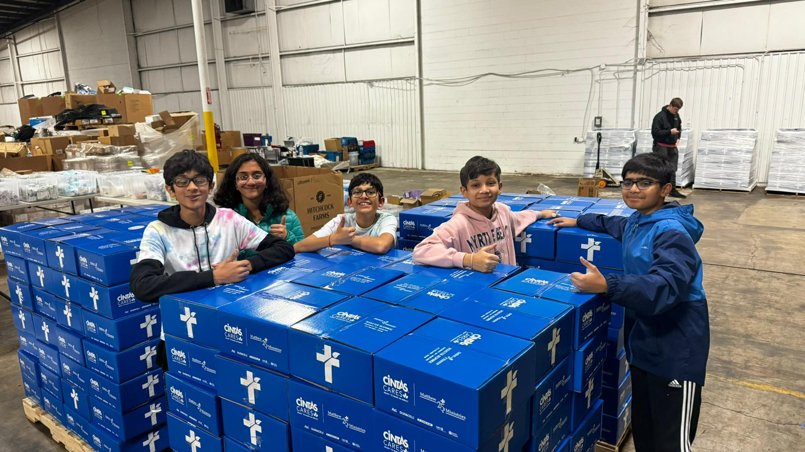
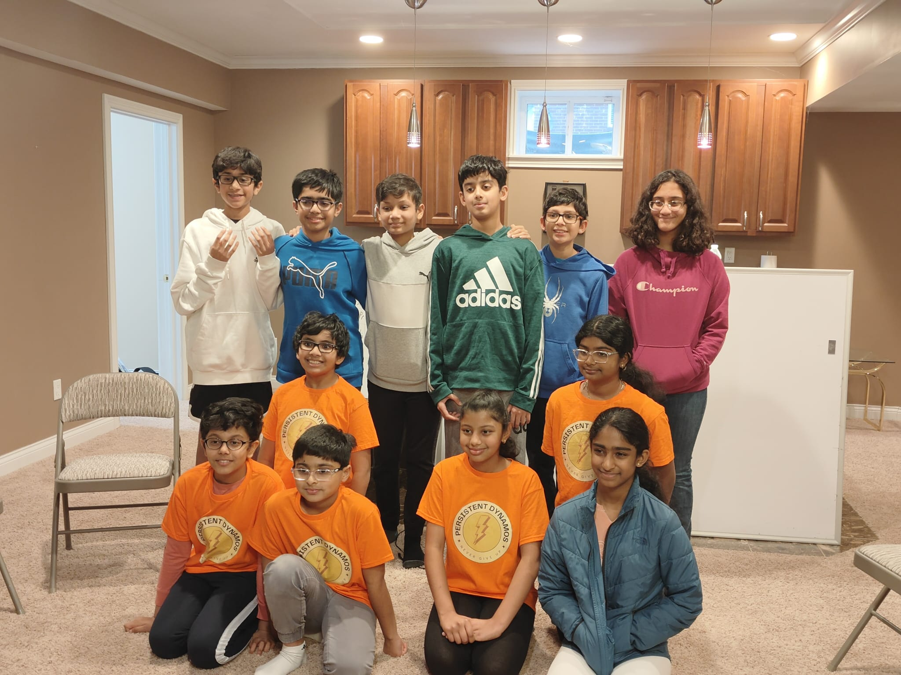

HobbyBazaar is an innovative platform where you can create anything! You can create anything, from simple music pieces to whole movies! You can message people, join groups, and find people with a different hobby than you to create something AWESOME. This platform was developed to help tackle the problem of people not being interested in their hobbies, and to maybe find something new. You can regain interest in a previous hobby, or you can find a new hobby
We volunteered at Majestic Care
Image 2: We volunteered at M25M
Image 3: We mentored Persistent Dynamos
This platform was created by Ad Astra, an FLL team based in Mason, Ohio. The pictures above are some of the places we volunteered at to show how Hobbies can bring people together